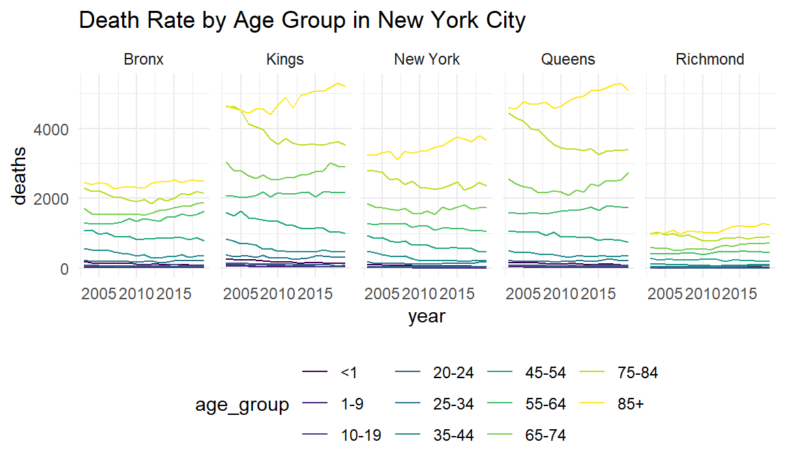

Age as a predictor of Death
#datasets for exploratory analysis
death_in_nys = read_csv("data/Vital_Statistics_Deaths_by_Region_and_Age-Group_by_Selected_Cause_of_Death___Beginning_2003.csv") %>%
janitor::clean_names() %>%
mutate(selected_cause_of_death = recode(selected_cause_of_death,
"CLRD" = "Chronic Lower Respiratory Disease"))
death_by_age = read_csv("data/Vital_Statistics_Deaths_by_Resident_County__Region__and_Age-Group__Beginning_2003.csv") %>%
janitor::clean_names() %>%
filter(region == "NYC")
opioid_death = read_csv("data/Vital_Statistics__Opioid-Related_Deaths_by_Age_Group__Beginning_2003.csv") %>%
janitor::clean_names()
suicide_death = read_csv("data/Vital_Statistics_Suicide_Deaths_by_Age-Group__Race_Ethnicity__Resident_Region__and_Gender__Beginning_2003.csv") %>%
janitor::clean_names()
#merging datasets for statistical analysis
predictor_age = left_join(opioid_death, suicide_death, by = c("year", "sex", "region", "race_or_ethnicity", "age_group")) %>%
filter(region == "NYC")Motivation to view Age Group as a Predictor
Though we find that Heart Disease, Cancer, Unintentional Injury, Accidents and Chronic Lower Respiratory Diseases to be the leading causes of death for the overall population of New York City, it is a known fact that the elderly are more likely to be victims to this disease. The purpose of age group as a predictor of death, is to analyze if there are differences in leading causes of death among different age groups. Additionally a further analysis is performed to view the relationship between age group on deaths caused by suicides and opioids. Though suicide and opioid related deaths are not leading causes of death in New York City, the growing death rate in these categories has been a concern to the medical and public health community.
death_by_age %>%
filter(age_group !="Total" & age_group !="Unknown") %>%
group_by(county_name, age_group) %>%
ggplot(aes(x=year, y = deaths, color = age_group)) +
geom_line()+
facet_grid(~county_name)+
labs(title="Death Rate by Age Group in New York City", color="Age Group")
Selected causes of death in New York State by Age Group
death_in_nys %>%
filter(age_group == "<1" | age_group == "1-9" | age_group == "10-19" | age_group == "20-24", selected_cause_of_death != "Total",selected_cause_of_death != "All Other Causes") %>%
group_by(year, age_group, selected_cause_of_death)%>%
ggplot(aes(x=year, y=deaths, fill=selected_cause_of_death))+
geom_bar(stat="identity")+
theme(axis.text.x = element_text(angle = 90, vjust = 0.5, hjust=1))+
facet_grid(~age_group)+
theme(legend.position = "none")
death_in_nys %>%
filter(age_group == "25-34" | age_group == "35-44" | age_group == "45-54", selected_cause_of_death != "Total",selected_cause_of_death != "All Other Causes") %>%
group_by(year, age_group, selected_cause_of_death)%>%
ggplot(aes(x=year, y=deaths, fill=selected_cause_of_death))+
geom_bar(stat="identity")+
theme(axis.text.x = element_text(angle = 90, vjust = 0.5, hjust=1))+
facet_grid(~age_group)+
theme(legend.position = "none")
death_in_nys %>%
filter(age_group == "55-64" | age_group == "65-74" | age_group == "75-84" | age_group == "85+", selected_cause_of_death != "Total",selected_cause_of_death != "All Other Causes") %>%
group_by(year, age_group, selected_cause_of_death)%>%
ggplot(aes(x=year, y=deaths, fill=selected_cause_of_death))+
geom_bar(stat="identity")+
theme(axis.text.x = element_text(angle = 90, vjust = 0.5, hjust=1))+
facet_grid(~age_group)+
theme(legend.position = "bottom", legend.key.size=unit(5,"point"))+
guides(fill=guide_legend(nrow=5, byrow=TRUE))+
labs(fill="Selected Causes")
Using the vital statistics of death data from the New York State Bureau of Vital and Health Statistics, our visual points to visible differences in leading causes of death among the age groups. Accidents seem to be a more frequent cause of death for the age groups of 25-34 and 35-44, which for individuals who are 45+ the frequency of death by diseases of the heart and malignant neoplasms are larger. While among the youth accidents have a higher cases of death in New York.
Further Analysis
Fitting a SLR model for Age Group as a predictor for Suicide Deaths
suicide_df = suicide_death %>%
filter(age_group != "Unknown", age_group != "Total") %>%
select(year, age_group, suicide_deaths)%>%
mutate(age_group = as.factor(age_group),
age_group = fct_recode(
age_group, "<1" = "1", "1-9" = "2", "10-19" = "3", "20-24" = "4", "25-34" = "5", "35-44"="6", "45-54" = "7", "55-64" = "8", "65-74" = "9", "75-84" = "10", "85+" = "11"))
# SLR model
s_fit = lm(suicide_deaths ~ age_group, data = suicide_df)
s_fit %>%
broom::tidy() %>%
filter(p.value < 0.05) %>%
select(term, estimate, p.value) %>%
knitr::kable()| term | estimate | p.value |
|---|---|---|
| age_group10-19 | 8.046241 | 0.0036926 |
| age_group20-24 | 12.295887 | 0.0000091 |
| age_group25-34 | 20.699315 | 0.0000000 |
| age_group35-44 | 21.551214 | 0.0000000 |
| age_group45-54 | 24.842316 | 0.0000000 |
| age_group55-64 | 18.581912 | 0.0000000 |
| age_group65-74 | 9.210045 | 0.0002191 |
| age_group75-84 | 5.917637 | 0.0169695 |
At a \(\alpha = 0.5\) level, all age groups except the age group of 1-9 and 85+ are significant predictors of suicide_death.
Fitting a SLR model for Age Group as a predictor for Opioid Poisoning Deaths
opi_df = opioid_death %>%
filter(age_group != "Unknown", age_group != "Total") %>%
select(year, age_group, opioid_poisoning_deaths)%>%
mutate(age_group = as.factor(age_group),
age_group = fct_recode(
age_group, "<1" = "1", "1-9" = "2", "10-19" = "3", "20-24" = "4", "25-34" = "5", "35-44"="6", "45-54" = "7", "55-64" = "8", "65-74" = "9", "75-84" = "10", "85+" = "11"))
# SLR model
o_fit = lm(opioid_poisoning_deaths ~ age_group, data = opi_df)
o_fit %>%
broom::tidy() %>%
filter(p.value < 0.05) %>%
select(term, estimate, p.value) %>%
knitr::kable()| term | estimate | p.value |
|---|---|---|
| age_group20-24 | 6.547308 | 0.000412 |
| age_group25-34 | 19.749315 | 0.000000 |
| age_group35-44 | 18.442530 | 0.000000 |
| age_group45-54 | 21.114706 | 0.000000 |
| age_group55-64 | 11.614706 | 0.000000 |
At a \(\alpha = 0.5\) level, those among the age groups of 20-64 are significant predictors of an opioid poisoning related death.
Limitations to Analysis
The datasets used in this analysis contain NA values, and by default
the lm() function disregards observations containing NA
values, which may limit the predictive capacity of our analysis.